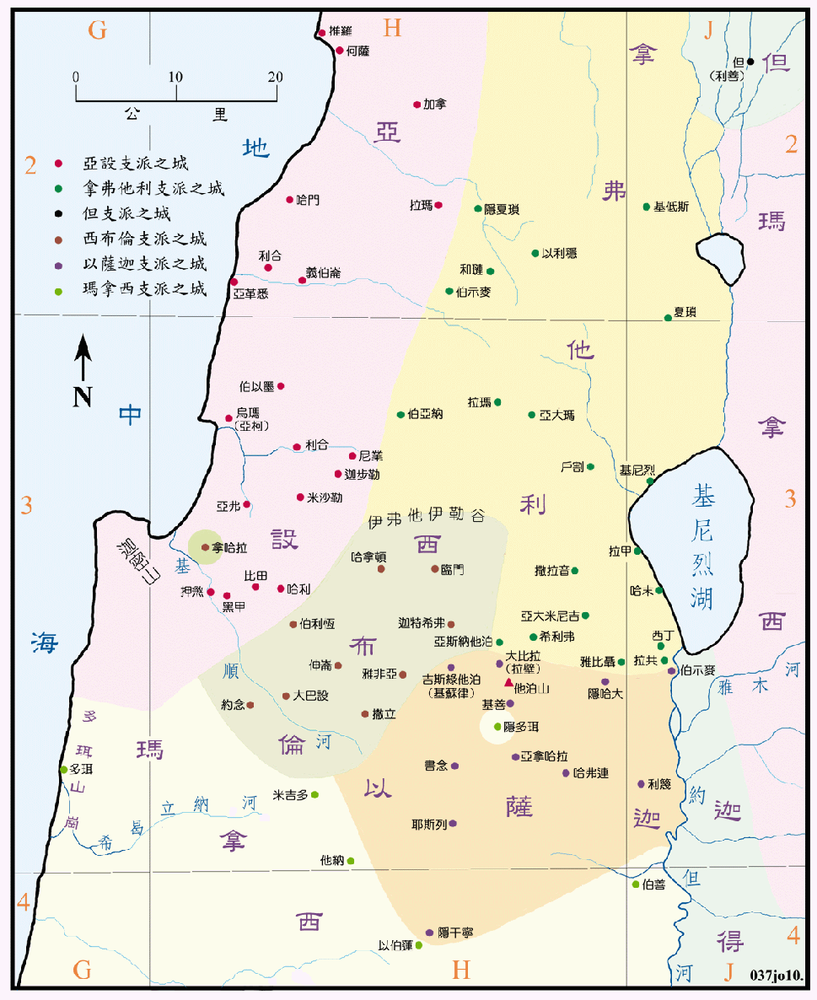

| 圣经 | 说明 |
|---|---|
| 书19:10-16 | 西布伦支派的地业。 |
| 书19:17-23 | 以萨迦支派的地业。 |
| 书19:24-31 | 亚设支派的地业。 |
| 书19:32-39 | 拿弗他利支派的地业。 |
| 书19:47 | 但人攻取利善，改名为但城。 |
四个支派的边界都欠明确，亚设和拿弗他利的南界不知止於何处，亚设的南界原来是到希曷立纳河，但其北之多珥是给了玛拿西支派，所以其南界假定是在迦密山的南麓，西布伦的城邑中并未包括约念在内，但是在利未城邑的名单中是属於西布伦所有，故其边界应是在约念之南，西布伦和以萨迦所分得的地是最小，但是却占有气候最佳，土地肥美的以斯得伦平原，可说得到了是迦南地最优良的地区，又因能控制南北的交通，故具有最重要的战略价值，所以也是多战乱的危险地区。拿弗他利虽是山地，却是最秀丽而且适於农牧之地，又有往大马色去的国际大道通过，控制了迦南地的北方门户，所以位置非常重要。
亚设占有肥美的沿海平原，土地肥沃，交通便利，但易受到外邦的侵扰。